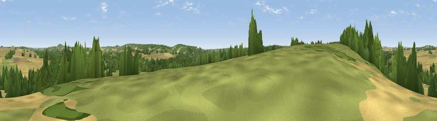

Viewpoint near Houghton
#35099 in England · top 51% of its area beats it · near HoughtonWhere it is
The exact computed spot (SU 32975 30925). Click the marker for map links.
The view, rendered

A 360° render of this exact spot computed from the terrain model, tree cover and land cover — summer colours, afternoon light, calibrated against photographs of famous viewpoints. Real trees, hedges and buildings will differ in detail.
The panorama
Grey silhouette: terrain skyline in each direction (720 bearings, Earth curvature and refraction included). Dashed green: skyline with trees (+15 m) and buildings (+8 m) as obstacles. Blue strip: how far the ground is visible on each bearing.
Where the view opens
Wedge length = distance to the farthest visible ground on that bearing (vegetation-aware). Rings at 10, 25 and 50 km.
What fills the view
39% grassland · 34% cropland · 26% woodland ·
Angular shares of the visible panorama (visual magnitude), not map area. Landscape diversity 0.49 (0–1 Shannon).
Key numbers
More beautiful places nearby
The staircase of upgrades: each row has a higher view potential than everything closer. Driving times are estimates from straight-line distance, calibrated against real road routing — check an actual route before setting out.
| Place | Direction | Drive | Score |
|---|---|---|---|
| Viewpoint near Houghton | WNW · 0 km | ~1 min | 45.9 |
| Viewpoint near Broughton | WNW · 5 km | ~10 min | 60.5 |
| Viewpoint near Stockbridge | NE · 6 km | ~13 min | 64.3 |
| Viewpoint near Sparsholt | ESE · 8 km | ~15 min | 66.9 |
| Viewpoint near Bulford | NW · 18 km | ~31 min | 70.3 |
| Beacon Hill | ESE · 29 km | ~45 min | 71.7 |
| Beacon Hill | NNE · 29 km | ~46 min | 76.7 |
| Martinsell viewpoint | NNW · 36 km | ~55 min | 77.3 |
51.07671, -1.53068 · source: screening · position refined by local search. Computed location — check access rights before visiting.